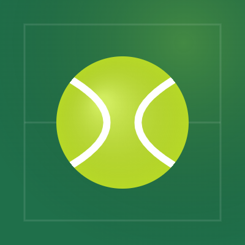
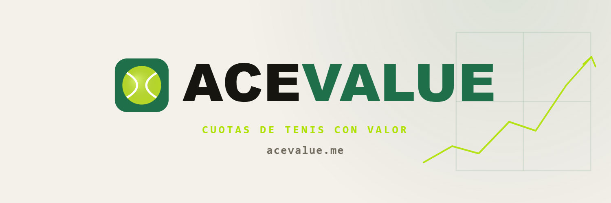
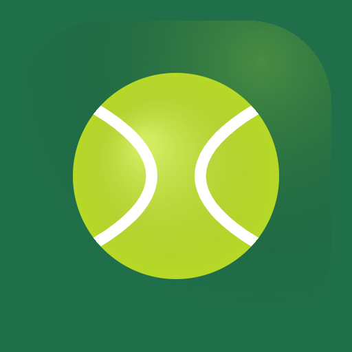

KIT DE MARCA · ACEVALUE
Marca lista para Twitter
Piezas a tamaño exacto, listas para subir. El favicon ya está conectado a la web. Descarga el paquete completo desde la tarjeta de descarga del chat.
Foto de perfil · 400×400

Archivo: avatar.png
Tamaño: 400×400 px
Twitter la recorta en círculo (ya está centrada).
Cabecera / Banner · 1500×500
twitter-banner.png — 1500×500 px

Texto centrado para que no lo tape la foto de perfil.
Favicon · ya instalado

Archivo: favicon.png (512×512) · ya añadido a index.html.
Descripción de la cuenta (bio)
Opción A
🎾 Cuotas de tenis con valor: el modelo vs el mercado. Y como el tenis es a dos, encontramos apuestas sin riesgo a diario. ATP & WTA · +18 🔞
👉 acevalue.me
Opción B · corta
El valor que las casas no ven. 🎾📈 Cuotas de tenis analizadas cada día + surebets. +18 · acevalue.me
📸 Fotos de los jugadores — de dónde sacarlas
Como es un circuito con pocos jugadores, las caras dan mucha profesionalidad. Usa solo imágenes con licencia libre (evita fotos con derechos de agencias/torneos):
- Wikimedia Commons (recomendado) — commons.wikimedia.org. Busca el jugador, abre la foto, copia la URL del archivo. Licencia libre (cita al autor si lo pide).
- Wikipedia — la foto de la ficha suele venir de Commons (libre).
- Tus propias fotos o bancos rights-free (Unsplash, Pexels).
⚠️ No uses fotos de Getty, ATP/WTA oficiales o periódicos: tienen derechos.
📍 Dónde ponerlas (en el código)
Abre config.js y rellena el bloque ACE_PHOTOS. La clave es el nombre del jugador en minúsculas, sin espacios ni acentos. La vista ya muestra la foto sola (cabecera de partido, buscador, tarjetas); si no hay foto, sale el monograma con sus iniciales.
window.ACE_PHOTOS = {
carlosalcaraz: 'https://upload.wikimedia.org/.../alcaraz.jpg',
janniksinner: 'https://tu-dominio/fotos/sinner.jpg',
igaswiatek: 'https://.../swiatek.jpg',
};
Truco para saber la clave exacta: es el nombre completo del jugador (tal y como sale en las cuotas) en minúsculas y sin acentos ni espacios. Ej. «Carlos Alcaraz» → carlosalcaraz · «Iga Świątek» → igaswiatek.
También puedes guardar las fotos en una carpeta brand/players/ de tu repo y poner la ruta relativa: 'brand/players/alcaraz.jpg'.
Colores de marca
#1F6F4A
#AEE100
#F3F1EA
#17150F
Verde pista · Lima pelota · Papel · Tinta. Tipografías: Bricolage Grotesque + Hanken Grotesk + Space Mono.